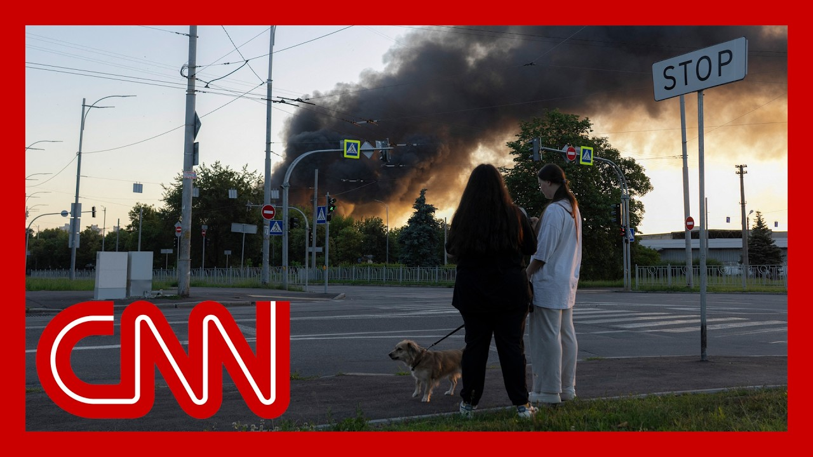

【CNN News 特朗普与普京通话后，俄罗斯对乌克兰发动创纪录数量的无人机攻击｜20250706】
Summary: New this morning, after speaking with Ukrainian President Vladimir Zelensky, President Trump says he's considering sending more patriot missiles to Ukraine.
摘要： 今早最新消息，在与乌克兰总统弗拉基米尔·泽连斯基通话后，特朗普总统表示正考虑向乌克兰运送更多爱国者导弹。

⏱️ Estimated Reading Time: 14 min
📚 四级生词 📚 六级生词 📚 雅思生词 📚 托福生词 📚 专八生词 📚 SAT生词 📚 考研生词 📚 GRE生词 📚 高考生词 📚 其它生词生词
New this morning, after speaking with Ukrainian President Vladimir Zelensky, President Trump says he's considering sending more patriot missiles to Ukraine.
今早最新消息，在与乌克兰总统弗拉基米尔·泽连斯基通话后，特朗普总统表示正考虑向乌克兰运送更多爱国者导弹。
Trump characterized the call as, quote, very good.
特朗普将此次通话形容为“非常好”。
Yesterday, Keeve endured the biggest attacks since Russia invaded Ukraine more than three years ago.
昨日，基辅遭受了自俄罗斯三年前入侵乌克兰以来最大规模的袭击。
The attacks happened hours after Putin and Trump spoke by phone.
袭击发生在普京与特朗普通话数小时后。
Trump said he was very unhappy with this conversation with Putin.
特朗普表示对此次与普京的对话“非常不满”。
Now Russia has been stepping up its attacks on Ukraine, pounding Keeve with a record number of drawn strikes.
目前俄罗斯正加强对乌攻击，以创纪录数量的无人机袭击猛攻基辅。
And now officials in Keeve say there's some evidence some of those drones were made in China.
基辅官员称，有证据表明部分无人机产自中国。
CNN's Chief International Security Correspondent Nick Payton-Walsh has more.
CNN首席国际安全记者尼克·佩顿-沃尔什带来详细报道。
Here the buzz and all you can do is wait.
这里只有无人机的嗡鸣声，人们能做的只有等待。
Keeve has seen this almost every night for months.
数月来，基辅几乎每晚如此。
But there was something about Thursday night's ferocity that seemed new and unchecked, even underground.
但周四夜晚的猛烈程度前所未见，甚至在地下也无法躲避。
No sleep is the norm, huddling in basements too, if you're not so immune to the sirens, you turn over in bed when you hear them.
无法入睡已成常态，人们蜷缩在地下室；若还未对警报麻木，听到时只能在床上辗转。
Hearing Russia broke another record of drones fired has also happened a lot this past month.
过去一个月，俄罗斯屡次刷新无人机攻击纪录。
What was different was the possibility the capital's air defenses behind interceptions like these might be in trouble.
不同的是，首都防空系统拦截后可能已不堪重负。
Gunners try to pick off drones, but the American supply of patriots that take down Russian ballistic missiles is at best in doubt.
炮兵试图击落无人机，但美国提供的用于拦截俄弹道导弹的爱国者系统供应存疑。
Leaving nights here longer and louder and solace something you find in the subway.
这里的夜晚更漫长、更嘈杂，地铁站成了唯一慰藉。
A record assault that came moments after President Trump and Putin spoke.
这场创纪录的袭击紧随特朗普与普京通话后发生。
That too did not go well.
这次通话同样不顺利。
I'm very disappointed with the conversation I had today with President Putin, because I don't think he's there.
“我对今日与普京总统的对话非常失望，我认为他毫无诚意。”
I don't think he's there. I'm very disappointed.
“他毫无诚意，我非常失望。”
Well, I'm just saying I don't think he's looking to stop.
“我只是说，我认为他无意停火。”
And that's too bad.
“这太糟糕了。”
Among the smoldering remains of civilian worlds terrorized, Ukraine's foreign minister claimed, fragments of a go-round to combat drone were found, made in China.
在平民区焦黑的废墟中，乌克兰外长称发现了中国制造的战斗无人机残骸。
The growing global footprint of a war where Keeve's daylight is dark and still by the smoke of the night before and where the damage done is measured in intimate personal loss.
这场战争的全球影响不断扩大：基辅的白昼被前夜的硝烟笼罩，而创伤以每个家庭的破碎衡量。
Hear what that feels like for those who's broken homes lie in pieces around them.
听听家园化为废墟的人们作何感受。
Today's attack is the most significant one for us.
“今天的袭击对我们来说是最严重的。”
It's a three-and-a-half year-old who has been in the military for a long time.
“这是个参军多年的三岁半孩子。”
No, it's a different one.
“不，是另一个。”
It's a different one. It's a different one. It's a different one.
“是另一个，另一个，另一个。”
You can see it, but it's not our fault.
“你能看到，但不是我们的错。”
It's just not the right one.
“只是不对的那个。”
It's all the same.
“全都一样。”
The drone is a different one.
“无人机是另一种。”
You can see our hero, the animal, the animal, and he's not the animal.
“你能看到我们的英雄，那只动物，但他不是动物。”
It's the same thing. It's the same thing. It's the same thing.
“是同一个，同一个，同一个。”
Come on, everyone, Americans, you know.
“拜托，美国人，你们知道的。”
How do we live here?
“我们怎么在这里生活？”
We're all going to be able to.
“我们都将能...”
It's very scary.
“这太可怕了。”
When people stop, it's very scary.
“当人们停下时，非常可怕。”
But only little children.
“但只有小孩子。”
It's not a gas.
“不是瓦斯。”
It's not light.
“不是灯光。”
We don't have any hope in America.
“我们对美国不抱希望。”
We don't have any hope in America. We don't have any hope in America.
“我们对美国不抱希望，不抱希望。”
Nick Payton-Wolsch, CNN, London.
CNN尼克·佩顿-沃尔什于伦敦报道。
President Trump says the United States is considering Ukraine's request for more Patriot missile defense systems.
特朗普总统称美国正考虑乌克兰关于增援爱国者导弹系统的请求。
That comes after what Mr. Trump says was a very good phone call on Friday with Ukrainian President Vladimir Zelensky.
此前特朗普表示周五与乌克兰总统泽连斯基的通话“非常好”。
We had a good call.
“我们进行了很好的通话。”
We talked about different things.
“我们讨论了各种议题。”
We had a very good call. I think a very strategic call.
“这是一次非常良好、极具战略意义的通话。”
We've been out with them and will continue to help them.
“我们一直支持他们，并将继续提供帮助。”
It's a pretty tough situation.
“局势相当艰难。”
We'll see what happens.
“我们拭目以待。”
The two spoke just hours after Russia launched a record number of attack drones at Ukraine.
此次通话前数小时，俄罗斯刚向乌克兰发动创纪录数量的无人机攻击。
And a day after Trump said he did not make any progress towards a ceasefire during his phone call with Russian President Vladimir Putin.
而一天前特朗普称，在与俄总统普京的通话中未就停火取得进展。
Joining me now to discuss CNN military analyst and retired colonel, Sajik Layton.
现在请CNN军事分析师、退役上校萨吉克·莱顿参与讨论。
Thank you so much, Colonel, for joining us on this holiday weekend morning.
“上校，感谢您在假日周末清晨加入我们。”
But let's get into this.
“让我们深入探讨。”
This really seems to fly in the face of reporting earlier this week that the U.S. was pausing some shipments of weapons to Ukraine, including air defense missiles.
“这似乎与本周早前美国暂停向乌运送防空导弹等武器的报道相矛盾。”
What do you make of it all?
“您如何看待？”
Yeah, Danny, good morning.
“丹尼，早上好。”
There are a lot of different aspects to this.
“此事涉及多方面。”
But one of the key aspects is that the administration is basically having two policies at the same time.
“但关键在于政府同时推行两种政策。”
One of the issues here is that the Department of Defense, as you mentioned, has stopped, at least temporarily, shipments of weapons to Ukraine, weapons and munitions.
“如你所言，国防部已至少暂时停止向乌运送武器弹药。”
That, of course, is a real problem for the Ukrainians because they are dependent on U.S. munitions, especially munitions for the Patriot batteries, which are exactly what's needed for the air defense and missile defense of populated areas in Ukraine.
“这对乌方是严峻问题，因为他们依赖美制弹药，特别是保卫居民区所需的爱国者系统弹药。”
So, of course, we saw within the last few nights the massive Russian air and missile attacks against major Ukrainian cities.
“因此我们近日目睹俄军对乌主要城市的大规模空袭。”
And it really shows that these air and missile defenses are critical for the Ukrainian defense effort now on the side of the President, with him speaking to Zelensky after his not so successful phone call with Putin.
“这凸显防空系统对乌防御至关重要。总统在与普京通话未果后转而与泽连斯基交谈。”
At least that's how President Trump characterized it.
“至少特朗普总统如此描述。”
I think that shows that there is certainly a possibility that the United States may shift its policy from a semi-neutral or even somewhat pro-Russian stance to a pro-Ukrainian stance, and Russian intransigence is what's causing that.
“这表明美国政策可能从半中立甚至亲俄转向亲乌，而俄方顽固态度正是促成因素。”
Yeah, and I mean, the images of the attack from earlier this week, I mean, truly harrowing to see.
“本周袭击的画面确实令人揪心。”
But following that attack earlier this week, Ukraine's President Zelensky said that his country is ready to buy American systems to strengthen its air defense.
“袭击后，泽连斯基总统表示乌克兰准备购买美国系统以强化防空。”
Political reporter, though, Ukraine may also go through Europe.
“但有政治记者称乌克兰或通过欧洲获取。”
And I was curious, your perspective on this kernel.
“我想听听您的观点。”
Is that a viable option for Ukraine to get American weapons, but through European allies?
“通过欧洲盟友获取美制武器是否可行？”
Yeah, it's a little bit of a unique situation, Danny, because if the weapon is of U.S. origin, U.S. manufacture, it still needs to be the sale, still needs to be approved by the U.S.
“这是个特殊情况，丹尼。若武器为美制，仍需美国批准销售。”
But yes, financially, it's possible for them to, in essence, go through a third party, in this case the Europeans.
“但经济上可通过欧洲等第三方实现。”
Politically, it probably makes sense to do that if they can clear that last hurdle of U.S. approval.
“若能获美方最终批准，政治上此举合理。”
So it can be done.
“因此可行。”
It should be done.
“也应实施。”
Basically, all the things that the Ukrainians need are going to be critical to get to the front lines.
“乌方所需物资对前线至关重要。”
And I think in this particular case, they're going to have to find innovative solutions to get from A to B, so to speak.
“这种情况下，他们需要创新解决方案来完成运输。”
Right, the right logistics.
“是的，正确物流方案。”
I imagine play a big role in that as well.
“我想这也起关键作用。”
President Trump seems to be getting, though, more and more frustrated with Russian President Vladimir Putin as he alluded to.
“但特朗普总统似乎对普京越来越失望。”
Let's take a listen to what he said about this earlier.
“请听他先前的表态。”
I told you I was very unhappy with my call with President Putin.
“我说过对与普京总统的通话非常不满。”
And it just saves, like, once you go all the way and just keep killing people.
“这就像...一旦开始就不断杀人。”
No good.
“没有好处。”
It's not good.
“这不好。”
I was an happy one.
“我不高兴。”
It's interesting, Colonel, because this is kind of the message that Ukraine has trying to tell President Trump for quite a long time, right?
“有趣的是，上校，这正是乌克兰长期试图向特朗普传达的信息，对吧？”
Oh, yeah, absolutely.
“确实如此。”
Really since the beginning of the war, they've been trying to tell all American presidents, both President Biden and President Trump, the same basic thing.
“自战争伊始，他们一直向拜登和特朗普总统传递相同信息。”
At the end of Biden, listen to that message, you know, more or less.
“拜登最终或多或少听取了。”
And Trump has had basically a predilection for, I think, President Putin's regime in Russia.
“而特朗普此前对普京政权有所偏爱。”
And in this particular case, he's getting a dose of reality that the Russians are the aggressors in this case.
“但这次他意识到俄罗斯才是侵略方。”
And he started this war.
“是俄方发动战争。”
And if it weren't for that aggression, the Ukrainians wouldn't have to be fighting like this.
“若非侵略，乌克兰不必如此抗争。”
Yeah, I'm thinking back to that picture of President Zelensky with President Trump at the Vatican a little bit more closely now.
“我不禁更仔细回想泽连斯基与特朗普在梵蒂冈的合影。”
Just one last quick thing, Colonel, if that's all right.
“最后一个问题，上校。”
President Trump said he's optimistic about a ceasefire deal in Gaza.
“特朗普称对加沙停火协议乐观。”
What's your take on this?
“您怎么看？”
Do you think that this might be close to reality?
“这可能实现吗？”
It could be.
“有可能。”
I think one of the things that we're seeing is that the efforts by the administration may have paid off in this particular case.
“政府的努力可能在此事上见效。”
Moss has come out saying that they basically accept the tenants of a ceasefire proposal.
“摩萨德表示基本接受停火提案原则。”
Now we've been here before.
“但此前有过类似情况。”
So I would urge a little bit of caution, you know, when it comes to this kind of assessment.
“因此建议对此类评估保持谨慎。”
And so it's possible things could go south, so to speak in a very quick way.
“局势可能迅速恶化。”
But I think the prospects are good that they'll be some kind of ceasefire very soon in Gaza.
“但我认为加沙很快有望实现某种停火。”
At least that's what it looks like right now.
“至少目前如此。”
Wow, incredible.
“真是难以置信。”
And so many moving parts overseas.
“海外局势如此复杂。”
Colonel Sajiklain, thank you so much as always for your insight.
“萨吉克莱恩上校，一如既往感谢您的见解。”
You bet, Danny, anytime.
“随时效劳，丹尼。”